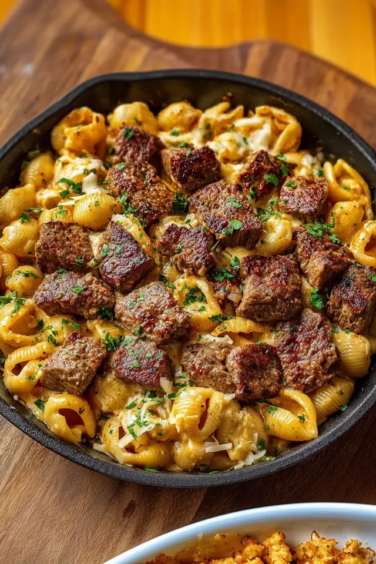

Cajun Steak Bites with Cheesy Garlic Shells
Developed by Forrest White & Cook Anything Kitchen
Ingredients
For the Cajun Steak Bites
- 1 ½ lbs sirloin steak or ribeye, cut into bite-sized cubes
- 2 tbsp Cajun seasoning (store-bought or homemade)
- 2 tbsp olive oil
- 2 tbsp unsalted butter
- 2 cloves garlic, minced
- Salt and pepper, to taste
- Fresh parsley, chopped (for garnish)
For the Cheesy Garlic Shells
- 8 oz medium pasta shells
- 2 tbsp unsalted butter
- 3 cloves garlic, minced
- 1 cup heavy cream
- 1 cup shredded sharp cheddar cheese
- ½ cup grated Parmesan cheese
- ½ tsp paprika
- ½ tsp black pepper
- Salt, to taste
- ¼ cup reserved pasta water (optional, for thinning the sauce)
Directions
-
Cook the pasta:
Bring a large pot of salted water to a boil. Add the pasta shells and cook until al dente.
Reserve ¼ cup of the pasta water, then drain the pasta and set aside. -
Season the steak:
Pat the steak cubes dry with paper towels.
Toss with Cajun seasoning, salt, and pepper until evenly coated. -
Sear the steak bites:
Heat a cast iron skillet over medium-high heat and add the olive oil.
Sear the steak bites in batches for 2–3 minutes per side, until browned on the outside and cooked to your liking.
During the last minute of cooking, add the butter and minced garlic, tossing to coat the steak bites in the garlicky butter.
Remove the steak bites from the skillet and set aside. -
Start the cheese sauce:
In the same skillet, reduce the heat to medium.
Add the butter and minced garlic, sautéing for about 1 minute until fragrant (do not brown). -
Build the creamy sauce:
Pour in the heavy cream, stirring to deglaze the pan and scrape up any browned bits.
Let it simmer gently for a few minutes. -
Add the cheeses and seasonings:
Stir in the shredded cheddar, Parmesan, paprika, black pepper, and salt.
Continue stirring until the cheese is fully melted and the sauce is smooth and creamy. -
Combine with the pasta:
Add the cooked pasta shells to the skillet and toss to coat in the cheese sauce.
If the sauce is too thick, add a splash of the reserved pasta water until it reaches your desired consistency. -
Finish and serve:
Top the cheesy garlic shells with the seared Cajun steak bites.
Garnish with chopped fresh parsley and serve immediately.
Notes
- Adjust the heat: If you prefer a spicier dish, add extra Cajun seasoning or a pinch of cayenne pepper. For a milder version, reduce the Cajun seasoning slightly.
- Steak doneness: Remove the steak bites from the skillet as soon as they reach your desired doneness to prevent overcooking—carryover heat will continue cooking them slightly.
- Cheese variations: Swap sharp cheddar for pepper jack, Colby jack, or a blend for different flavor profiles. Freshly grated cheese melts best.
- Sauce thickness: If the cheese sauce becomes too thick, gradually stir in the reserved pasta water or extra cream until smooth and silky.
- Pasta options: Shells hold the creamy sauce well, but you can also use rotini, cavatappi, or elbow macaroni.
- Make it ahead: You can prep the steak bites and cheese sauce separately. Reheat gently and combine when ready to serve.
Nutritional Information
Serving Size: Approximately 1/4 of the recipe (steak bites + cheesy shells)
- Calories: ~1,080 kcal
- Carbohydrates: ~50 g
- Protein: ~60 g
- Fat: ~65 g
Note: Values are approximate and will vary based on the exact cut of steak, brand of cheese, and portion sizes.